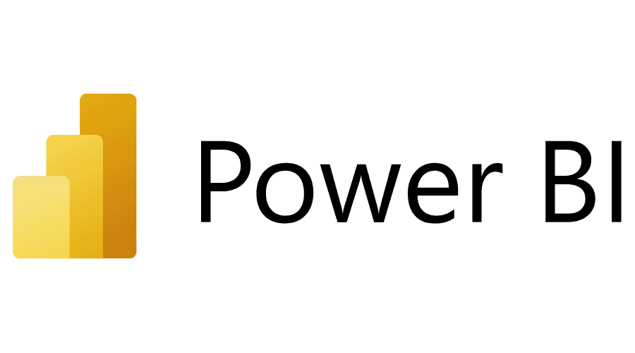

The purpose of this project is to provide potential Airbnb hosts with actionable insights into the
most profitable neighborhoods in Boston. This analysis helps investors make informed decisions when
choosing where to invest in Airbnb properties, considering factors such as price per night,
occupancy rate, and overall potential revenue.
The goal of this project is to provide a comprehensive analysis of size and color distribution across
different items,
locations, and seasons to inform inventory management, sales strategies, and marketing decisions.
Using SQL, this
project aims to derive key insights into product performance, customer preferences, and seasonal
trends, ultimately
enabling data-driven decisions to optimize inventory levels and improve revenue.

This project is focused on leveraging Power BI to analyze and visualize sales data, delivering
actionable insights and accurate forecasting. Key highlights include data import, cleaning, and
processing; designing an interactive dashboard with advanced charts, maps, filters, and slicers; and
incorporating data analysis techniques with a specialization in time series analysis. The project
features sales forecasting and a user-friendly interface, enabling stakeholders to make data-driven
decisions and drive business success.

Designed and implemented an SQL-based retail sales analysis project, including database setup, data
cleaning, and exploratory analysis. Generated insights into sales trends, peak periods,
top-performing products, and customer behaviors to drive data-informed decision-making and
operational improvements.